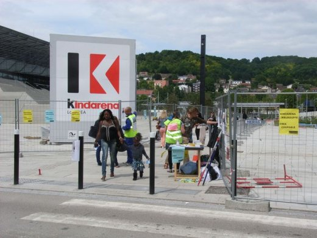

| |
Site dédié à la publication d'informations communiquées par le Collectif des déboulonneurs. En aucun cas ce site n'appelle à des actions illégales. | |
 |
||
|
Accueil du site > Rouen > Compte-rendu de l’action du 23 juin, à Rouen, contre le Kindarena
En bref : • samedi 23 juin 2012 • heures : de 14h30 à 17h • lieu de l’action : rue de Lillebonne, face au Palais des sports en construction, qui sera baptisé KINDARENA le 8 septembre, également à l’entrée des Docks, à la station du Téor Mont-Riboudet, et près de la rocade à 4 voies vers le pont Flaubert. • nombre de panneaux touchés au blanc d’Espagne : l’immense logo « Kindarena », 2 obstacles urbains (JCDecaux), 4 faces de 8m2 (CBS). • nombre de barbouilleurs : 2 • nombre d’acteurs : 25 • nombre approximatif de passants : plusieurs milliers ! Plus de 1.000 tracts distribués aux piétons et aux automobilistes. Près de 100 signatures sur notre pétition ; plusieurs centaines d’un modèle de lettre à envoyer au Maire de Rouen (Fourneyron, ministre des sports). •1 journaliste présent : France Bleu • nombre de policiers et vigiles des Docks : quelques-uns. • attitude de la police nationale, municipale et des vigiles : courtoisie réciproque. La police nationale avait été prévenue avant l’action par nos soins. • faits particuliers : notre groupe de musique préféré a pu jouer devant l’entrée des Docks. Les passants ont été réceptifs au tract et à la pétition, même si des 15-25 ans avaient tendance à nous dire « mais c’est très bon le Kinder » ! • Retombées presse : une brève le dimanche sur France Bleu. • Télécharger la lettre modèle à envoyer à Madame Fourneyron, Ministre Députée Maire de Rouen : En plus long : Notre déception a été de n’être que 25 déboulonneurs. De ce fait, nous n’avons pas déambulé avec nos visuels à l’intérieur du centre commercial des Docks comme cela avait été envisagé. À 14h30, un groupe d’acteurs est resté à proximité d’une entrée des Docks, avec tracts et une table pour la pétition, pendant qu’un autre groupe est allé se mettre en statues silencieuses proposant notre tract, accompagné de notre groupe de musique préféré. À 15h30, le petit groupe avec sa table est resté sur place, et, comme convenu, l’autre groupe est parti faire des barbouillages au blanc d’Espagne sur des panneaux défilants au Mont-Riboudet. Il faut dire que nous manions de mieux en mieux le blanc d’Espagne et les perches munies de rouleaux de peinture. Remarques :

 |
|
Site utilisant SPIP - Hébergement Ouvaton
|